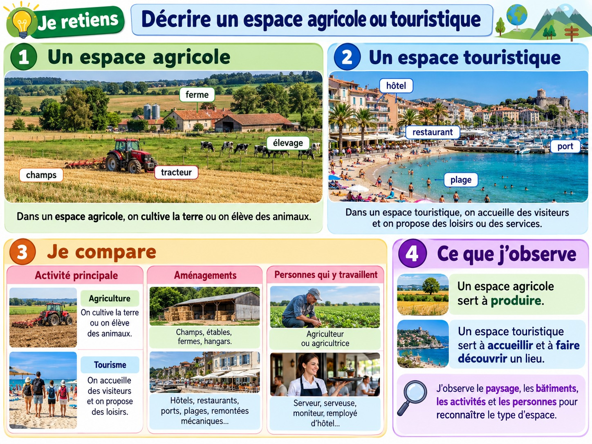

Décrire un espace agricole ou touristique
Repérer les activités, les bâtiments et les aménagements dans des paysages.
J’observe

Illustration pédagogique composée à partir de visuels de style photographique.
Un espace agricole
On y cultive des plantes ou on élève des animaux. On peut observer des champs, des vergers, des serres, des bâtiments agricoles et des chemins.
Un espace touristique
Les visiteurs viennent découvrir un lieu ou profiter de loisirs. On peut voir des hébergements, des lieux de visite, des chemins balisés et des équipements.
Observer un paysage
Je décris d’abord ce que je vois : bâtiments, routes, champs, plages ou sentiers. Ensuite, je cherche les activités humaines qui utilisent cet espace.
Je retiens
Un espace agricole sert notamment à produire des ressources. Un espace touristique accueille des visiteurs. Les activités des habitants transforment et aménagent les paysages.